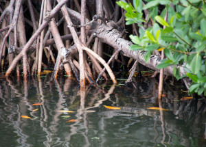

Fish Haven
Weather Summary
Currently: Clear Sky
High: 55 °F
Wind Chill: °F
Humidity: 66%
Wind Speed: 10 mph
5 Days Forecast
Upcoming Events:
How Do Animals Breathe Underwater?
by: Mindy Weisberger
In fish, gills have proved to be a successful system for respiration, using a network of blood vessels to draw in oxygen from flowing water and diffuse it through gill membranes, according to the Northeast Fisheries Science Center.
Across most fish, gills have "the same basic blueprint," Solomon David, an assistant professor with the Department of Biological Sciences at Nicholls State University in Louisiana, told Live Science.
"They're made to have this countercurrent exchange of gas — pull oxygen out and release waste," David said. When fish gape their mouths, they create a current of water flowing over their gills. Reddish, highly vascularized tissue sucks out oxygen and expels carbon dioxide, "kind of like capillaries in our alveoli," he said.
However, gills aren't exactly one-size-fits-all. Their structure can vary between species to suit their oxygen needs, according to David. The gills of a fast-swimming tuna, for example, will vary somewhat from those of a fish that's a lie-and-wait predator, such as an alligator gar.
Contact Information
| Climate Site |
| Tuburan Sur, Danao City |
| Philippines, 6004 |
| ✉ climatesite@info.com |
| ☎ 0945-8878-555 |